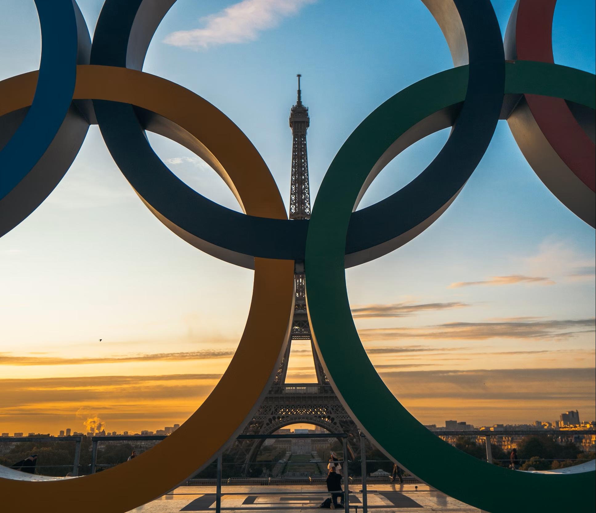

Cet été auront lieu les Jeux Olympiques de Paris 2024, On vous récapitule tout ce qu’il faut savoir sur cet évènement majeur.
Cent ans après les Jeux Olympiques de Paris 1924, la France s'apprête à recevoir près de 10 millions de spectateurs pour le plus grand événement sportif de haut niveau du monde. Au total, 329 épreuves auront lieu, dans lesquelles les 10 500 athlètes du monde entier s’affronteront pour ramener chez eux une médaille contenant un petit morceau de la tour Eiffel. On vous récapitule tout ce qu’il faut savoir sur les JO de Paris 2024.⛳🥅🏋️♀️🚴♂️
Les Jeux Olympiques de Paris se tiendront du 26 juillet au 11 août 2024. La cérémonie d’ouverture à ciel ouvert aura lieu le 26 juillet à 19h30 et signera le début de 762 sessions qui s’étaleront sur 18 jours dans la capitale et ses alentours. Les Jeux Paralympiques, quant à eux, prendront place du 28 août au 8 septembre.
La plupart des épreuves auront lieu en région parisienne, exception faite du tournoi de foot qui fera voyager les sélections nationales de villes en villes (Bordeaux, Nantes, Lyon, Saint-Etienne, Nice et Marseille). La phase finale du tournoi de handball et les matchs de qualification du tournoi de basket-ball se joueront à Lille. En parallèle, de l’autre côté de la planète, les surfeurs s’affronteront du côté de Tahiti, à Teahupo’o. Les athlètes prendront leurs quartiers du côté de Saint-Denis où un village olympique flambant neuf a été construit de toute pièce pour l’évènement. Paris a fait le choix de s’appuyer sur 95% d’édifices déjà existants et seul le centre aquatique olympique situé en face du Stade de France a été bâti spécifiquement pour les JO.L'Arena Porte de La Chapelle, qui a été inaugurée en ce début d'année, accueillera les compétitions de badminton ou encore de taekwondo, mais est surtout devenue la nouvelle maison du Paris Basketball et servira également à l'organisation de concerts et autres évènements après la compétition.
Selon les sports et les sessions, les tarifs varient entre 24 euros (prix choc promis par le gouvernement pour assurer l’accessibilité des Jeux) et 980 euros (pour l’athlétisme). La ministre des Sports et des JO, Amélie Oudéa-Castéra, a affirmé devant l'Assemblée nationale que les prix des billets des JO de Paris-2024 sont “inférieurs” à ceux des éditions précédentes. Cette dernière a également affirmé qu'un total d'un million de places à 24 euros seront vendues et que “la moitié des billets [seraient] à 50 euros et moins”. Si les premiers billets pour les JO de Paris ne pouvaient être achetés qu’après avoir été sélectionné sur concours aléatoire, la seconde vague est maintenant disponible sur la billetterie officielle.
Si le prix des places vous rebute, pas de panique, car plusieurs moments des JO de Paris 2024 seront accessibles gratuitement, notamment l'un des plus spectaculaires : la grande cérémonie d’ouverture pensée comme une déambulation le long des monuments des quais de seine par Thomas Jolly, le metteur en scène de Starmania. “L’idée c’est de plonger dans les sites pour raconter l’histoire de la France”, a déclaré le créateur à Eurosport, plongée que l’on pourra suivre depuis les quais hauts, tandis que des gradins payant seront installés sur les quais bas. VOIR Nikola Karabatić revient sur sa carrière : « Finir sur Paris 2024, ce serait vraiment le rêve » Au total, 326 000 personnes pourront assister à la cérémonie d'ouverture, dont 104 avec des places payantes et 222 000 avec des invitations gratuites. Ces précieux sésames seront distribués par les villes-hôtes ou encore les régions. “Les invitations qui vont être adressées par les collectivités, par l’Etat, par le mouvement sportif ou encore par le comité d’organisation, vont justement viser des publics populaires et des publics impactés par les Jeux”, a indiqué Amélie Oudéa-Castéra. D'autre part, le triathlon, les épreuves en eau libre et les courses organisées en plein Paris pourront être suivies gratuitement tout le long du parcours, sauf au niveau du départ, de l’arrivée et sur le pont des Champs Élysées, où seront installés des gradins payants. Mention spéciale à l’épreuve de cyclisme sur route qui s’annonce spectaculaire, et se termine par une boucle à compléter deux fois en plein Paris, comprenant l’ascension de la butte Montmartre.
Sur les 32 disciplines représentées lors des Jeux Olympiques, 28 sont imposées et 4 sont au choix de la ville organisatrice. Paris s’est ainsi tourné vers un public jeune avec l’escalade, le surf, le skateboard, toutes trois déjà présentes aux JO de Tokyo, et d'une vraie nouveauté : le breakdance. Les épreuves de breakdance et skateboard auront lieu au même endroit, place de la Concorde, entre deux affrontements de BMX Freestyle et Basketball 3x3. Le Karaté, en revanche, est le grand oublié des Jeux 2024. Le sport intégré au programme olympique de Tokyo, en 2021, n’a pas été sélectionné par la France. Autres changements pour les Jeux 2024, la France s’est donné pour objectif d’avoir une parité parfaite de sportifs sélectionnés, et a modifié en conséquence quelques épreuves, créant notamment une nouvelle épreuve mixte en athlétisme qui remplace le 50 km marche, ou bien en ajoutant une catégorie de poids féminine en boxe.
Trouver un logement dans Paris et ses environs ne sera pas chose aisée. Si la plupart des hôtels sont déjà complets durant cette période, quelques Airbnb restent encore disponibles. On a sélectionné les meilleurs et les moins chers sur: Les meilleurs Airbnb de Paris
Se déplacer à Paris s’annonce comme l’un des plus grands défis de cet été, que ce soit pour les franciliens ou les personnes venues uniquement pour les JO. Plusieurs solutions s’offrent aux Parisiens d’un jour ou de toujours. Les transports en communs, tout d’abord, dont la fréquence va augmenter de 15%, vont connaître plusieurs modifications. Le prix, tout d’abord : celui du ticket de métro a été fixé à 4 euros, doublant presque le tarif actuel (2,10 euros). Prix volontairement rédhibitoire, selon la présidente de la région Île-de-France, Valérie Pécresse, qui veut éviter les “embolies au guichet”. Pour les Franciliens, la formule Navigo Liberté + continuera de fonctionner de la même façon et sans modification tarifaire, de même que les Pass Navigo et Imagin’R. Pour les non-Franciliens, les “pass journée”, entre 10 et 16 euros par jour (toutes zones comprises, dont les aéroports) pourra être acheté dès mai sur l’application “Transport public Paris 2024”, disponible en six langues. Les Plus Lus 3 raisons de faire des séances d'entraînement de 20 minutes pour retrouver la forme sur le long terme Bien-Être 3 raisons de faire des séances d'entraînement de 20 minutes pour retrouver la forme sur le long terme Par Cristina Vila Voici la plus belle montre Rolex de l'année 2024, elle coûte 31.300 eurosMontres Voici la plus belle montre Rolex de l'année 2024, elle coûte 31.300 euros Par Jérémy Patrelle Bradley Cooper réinvente le look casual grâce à des Air Force 1 et un bomber Style Bradley Cooper réinvente le look casual grâce à des Air Force 1 et un bomber Par Bryan Ferreira En ce qui concerne la circulation routière, un dispositif de voies réservées est prévu dans le plan transports JO du gouvernement. Ces voies seraient exclusivement dédiées aux taxis, véhicules de transport en commun, véhicules destinés à favoriser le transport des personnes à mobilité réduite ainsi que véhicules de secours et de sécurité. À noter que les Ubers et VTC ne figurent pas dans cette liste. En dehors de ces options, il est possible d’arpenter la ville à vélo. Le réseau de Velibs, vélos en libre services de la ville de Paris, va être optimisé, avec l’ajout de 10 000 supports proches des sites olympiques. Les périmètres de sécurité autour des zones restant accessibles aux cyclistes et piétons. La projet des fameux “taxis volants” - les hélicoptères supposés survoler Paris sur cinq axes différents - a semble-t-il été abandonné pour des considérations écologiques.
Les Phryges, deux mascottes prenant la forme d' ne version peluche (et édulcorée) du bonnet phrygien, sont supposées incarner l’esprit sportif français. Selon le site officiel des Jeux Olympiques, “sous ses manières roublardes, elle est pudique et préfère cacher ses émotions. Avec son esprit méthodique et son charme fou, elle saura convaincre le plus grand nombre de faire plus de sport au quotidien”. Qu’elle corresponde ou non aux traits qu’on lui prête, la Phryge est partout, dans sa version olympique et paralympique (avec une prothèse au pied), et on peut déjà trouver des goodies à son image dans la boutique officielle aux Halles de Paris, aux côtés de l’affiche des Jeux olympiques de Paris 2024, une fresque parisienne dessinée par Ugo Gattoni, habitué à travailler avec de grandes marques comme Rolex, ou Hermès.
Sur la période du 16 juillet au 11 août, les Jeux prévoient de faire appel à 45 000 bénévoles. Plusieurs conditions sont nécessaires pour candidater : avoir plus de 18 ans au moment de la tenue des Jeux, parler français et/ou anglais, être disponible au minimum 10 jours entre l’ouverture du village olympique et le 13 août 2024. Malheureusement pour les retardataires, la période de candidature est terminée. En revanche, pour tous ceux qui ont déposé leur dossier, il est possible d’accéder à son espace volontaire depuis la page des Jeux.
Les jours sont affichés selon le fuseau horaire de Paris
⚠️:La date et l’heure des compétitions peuvent être modifiées à tout moment et sans préavis. Veuillez noter que la compétition de surf se déroulera sur 4 jours au cours d’une période de 9 jours. Le dernier jour de compétition devrait se dérouler (si les conditions météorologiques sont favorables) le 30 juillet à Tahiti et donc le 31 juillet au matin à Paris compte tenu du décalage horaire.